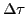

Next: Formulas for curvature Up: Curvature; radius of curvature Previous: Curvature of a circle Contents Index
Consider any curve. As in the last section,
 = total curvature of the arc PP ,
and
,
and
 =
average curvature of the arc PP
=
average curvature of the arc PP .
.
More important, however, than the notion of the average
curvature of an arc is that of curvature at a point.
This is obtained as follows. Imagine P to approach P
along the curve; then the limiting value of the average
curvature
as P approaches P along the curve is defined as the
curvature at P, that is,
approaches P along the curve is defined as the
curvature at P, that is,